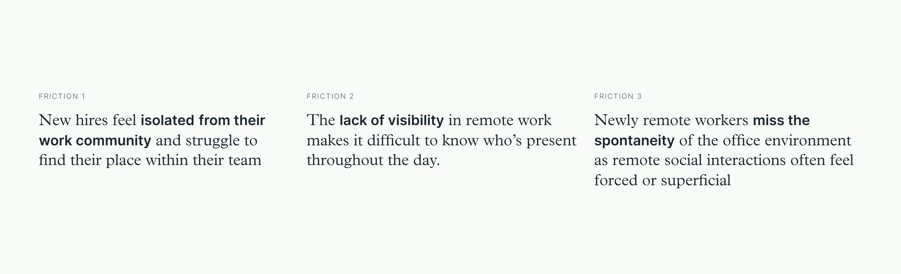
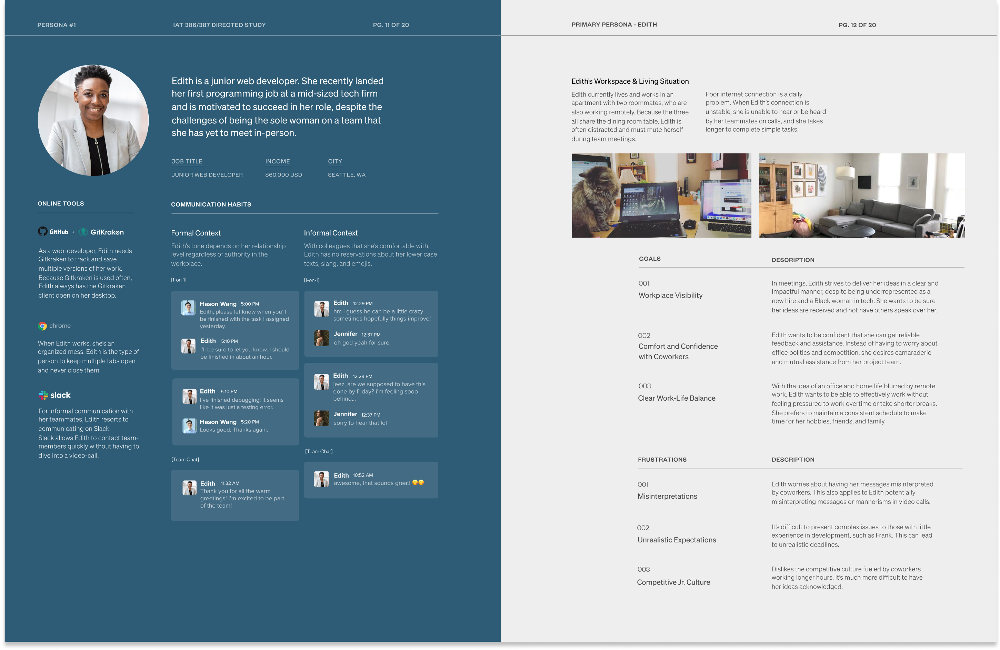
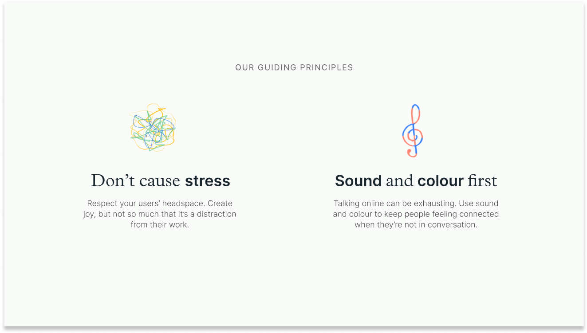
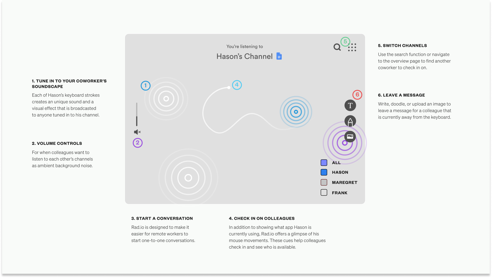
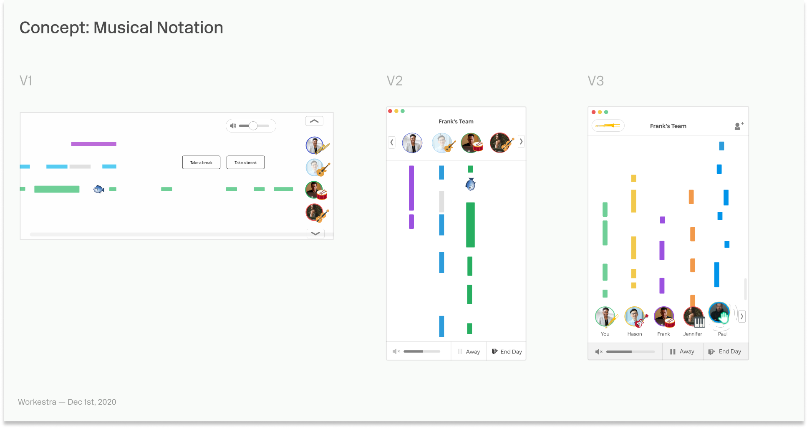
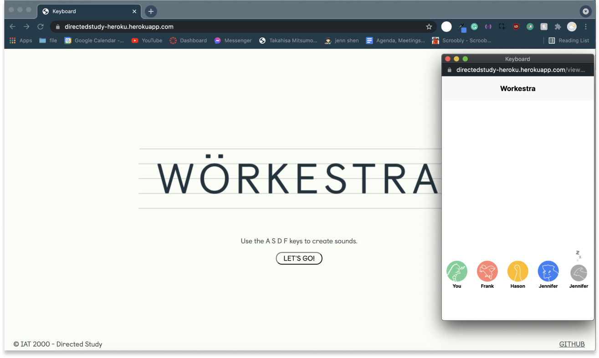

Workestra is a desktop and mobile app that allows remote coworkers to see and hear
each other’s keyboard and mouse clicks. Workestra is an exploration of how teams can be more present with each other over
distance while bringing joy into the remote workday.
This project was a thirteen-week Directed Study supervised under Carman Neustaedter,
taking a deep dive into the informal conversation habits of knowledge workers in North America.
Within the project, our team conducted a literature review and user interviews to ultimately build a
research report documenting COVID-19’s impact on project teams. This report informed our solution —
Workestra, a new interaction for remote teams with the aim to reduce social isolation throughout the workday.
Problem
Due to COVID-19, companies have moved team collaboration solely online,
causing 4.7 million Canadians to depend on online communication systems. According to the Angus
Reid Institute, “the percentage of [Canadians] saying that [video calling] makes them feel truly
connected has plummeted as usage has increased.” Authentic interactions such as spur-of-the-moment
conversations feel awkward and forced online, which is a missed opportunity for building team rapport.
“ I miss grabbing lunch with the team. All we talk about is work now.”
In-person interactions such as stopping by a co-worker’s
desk to catch up, are examples of how informal conversations can foster social support, collaboration,
and satisfaction within the workplace. From our findings, 95% of survey respondents said it was
difficult to socialize with their co-workers in a remote setting. Fostering authentic social
relationships online is important in the workplace, for the sake of mental health and a
productive team environment.
For a full breakdown of our findings, check out the full research report here.
Workestra is a desktop and mobile app that allows remote coworkers to see and
hear each other’s keyboard and mouse clicks. Workestra is an exploration of how
teams can be more present with each other over distance while bringing joy into
the remote workday.
Turn your sound on for the video!
When to use Workestra
There are many ways to use Workestra, whether it’s playing music together,
shaking your teammates for fun, or sending emojis to one another, Workestra is a flexible,
yet productive playground for your team to inhabit.
For a full list of features, check out our Final Slidedeck.
Click + Drag any of your coworker’s icons back and forth to distort their sound.
Think of it as a tap on the shoulder or a friendly way to say hello during the workday.
The wiggled team member will receive a notification and can follow up through their
company communication platform.
2. Send Emojis with Keywords
Type keywords and phrases like “breaktime” or “coffee” in any application to give
your team a hint about what you’re doing and where you are in your workday. Unique
keywords can be programmed by individual team members and can be used to send subtle
messages to their team.
3. Keep Workestra on the Side
With Workestra Mini, team members can see their co-workers in their peripheral vision.
Curious team members can hover over the musical bars to reveal a profile picture of
the currently active team member.
4. Sync up with Co-Workers
Remote work can be lonely. Workestra shows when you and your coworkers are both
typing above 90 words per minute — in other words: “in the zone” — by making
your instruments sound more resonant.
Process
1/6 - Literature Review
To start, we created a reading list on Notion and split up the research into three categories,
value of informal conversation, solutions to facilitate informal conversation, and emerging technologies.
These were the findings:
Our group was interested in taking an ethical approach to conducting research.
In the first week of our Directed Study, we all completed the TCPS2, a Canadian certificate for ethics,
which helped us understand how to ethically handle participant data.
Our team conducted an online survey and interviewed full-time remote workers in team based environments. Our assumption was that remote workers were frustrated that their communication
platforms lacked the frequency and richness that face-to-face interactions provided.
With the surveys, we were interested in their satisfaction with the types of platforms that they use
to communicate informally. With the interviews, we wanted details on how informal conversations arose in the
workplace, and how important informal conversation was to them.
Following ethical research design practices, we stored participant data in a secure vault after each interview,
anonymized participants, and set a date to destroy the data.
For a deeper look into our process, take a look our Research Proposal.
We interviewed nine participants that worked remotely.
According to this participant, informal collaboration is extremely important!
3/6 - Identifying the Audience
After surveying fourty-one knowledge workers and interviewing nine, we uncovered three key insights that shaped Workestra.

From these insights, I created our main persona: Edith,
a new hire at a mid-sized tech company that struggles to bond with a team she’s never worked with before.
It was necessary to create three personas of varying corporate hierarchy,
to map the relationship dynamics between Edith and her team members. Based on the
level of individual corporate status, my understanding was that each worker would interact with Workestra
in a unique way.
In the personas, we mapped out the communication habits of each team-member in Slack messages; showing short
conversations with team members in formal and informal contexts. This was important because I wanted to
respect corporate hierarchy by creating interactions that didn't seem too informal.

4/6 - Guiding Principles
Before jumping into the design, our team created guiding principles, as a
reminder to bring benefit to the workday. I believed that we were verging the line
between work and play, these guiding principles would keep the team on track to
design something that would benefit, instead of designing a product that piles on additional stress.

5/6 - Initial Exploration
Our initial solution proposal was called RADIO.io, a web application
allowing remote teammates to connect to each other’s musical channels. However, what we were
proposing with RADIO.io felt too similar to other solutions, such as products like Tandem.
Because of this, we decided to pivot and revisit the drawing board.
Another reason for the pivot was that RADIO.io required individuals to actively use the software.
We were afraid that this would break our established guiding principles, and would create distraction within the workday.

We presented RADIO.io to our professor, but we were unhappy with the direction it was taking.
6/6 - Shaping the Solution
Our goal with Workestra was to build comfort and confidence within
remote-teams, while introducing more presence within the workday. How could we achieve this
without creating distractions? Remote workers are already overwhelmed with the overload of
tabs and applications open. Introducing an additional application would be overkill!
So I thought, what if connection didn’t take any effort? Can we bring joy to mundane activities,
such as typing on the keyboard? What if people could passively play music together while they
worked? This was the line of thinking that brought us to our solution.
I came up with the idea of referencing musical notation, where each team-member is represented by a
note in a chord. These sketches were initial explorations that I co-created to create Workestra.

Early iterations of Workestra.
After finishing the final design, we realized there was no way to
test our interaction. In the last few days of the Directed Study, I coded a rough prototype
to get an understanding of what Workestra would feel and sound like.

Although we weren’t able to connect users to our web-app, we coded a very patchy prototype
to test the interaction.
Reflection
This problem space afforded exploration through many facets of remote work due to new problems, presenting fruitful
opportunities for intervention. I was debating on continuing this idea and bringing it to life, but due to a security
issue with keylogging, our team decided against it.
Although there were instances of struggle and frustration, we are extraordinarily proud of our creation.
After completing the project, many of us showed Workestra to friends, family, and working professionals,
and were blown away by the need for something like this in the workplace.


 We interviewed nine participants that worked remotely.
According to this participant, informal collaboration is extremely important!
We interviewed nine participants that worked remotely.
According to this participant, informal collaboration is extremely important!